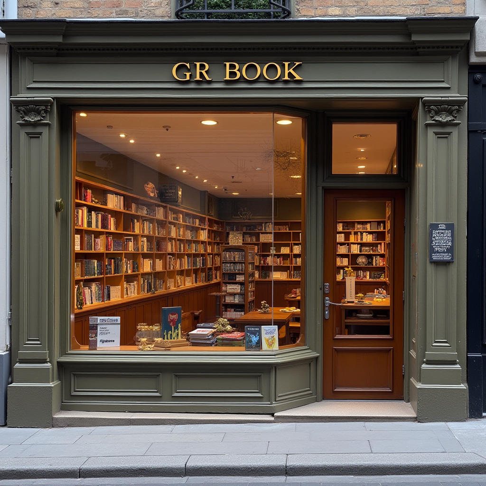

.png)

À propos de Gr Book
Bienvenue dans l'univers Gr Book, une série de bibliothèques modernes conçues pour les amoureux des livres et du savoir. Gr Book est bien plus qu'une simple collection de livres; c'est une expérience immersive qui réunit la tradition et l'innovation. Nous offrons un espace dédié aux lecteurs passionnés, aux chercheurs et à tous ceux qui croient au pouvoir des mots pour enrichir leur esprit et leur vie.Notre mission
Chez Gr Book, notre mission est de faciliter l'accès à un large éventail de connaissances en créant des espaces conviviaux et bien organisés, où chacun peut explorer, apprendre et se connecter. Nous croyons que chaque livre a le potentiel de transformer des vies et d’inspirer la créativité. Notre objectif est de promouvoir une culture du partage et de l’apprentissage dans une atmosphère accueillante.Notre collection
La série Gr Book propose une vaste collection de livres couvrant une multitude de genres et de disciplines, allant des classiques de la littérature aux dernières nouveautés en sciences, technologies, et art. Que vous soyez un étudiant à la recherche de ressources académiques, un professionnel cherchant à élargir ses compétences, ou un lecteur occasionnel désireux de se détendre avec une bonne histoire, nous avons quelque chose pour vous.Pourquoi choisir Gr Book ?
- Diversité et qualité : Nous nous engageons à fournir une sélection de livres et de ressources de haute qualité, soigneusement choisies pour répondre aux besoins variés de nos membres.
- Espace interactif : Chaque bibliothèque Gr Book est conçue pour offrir une expérience confortable et stimulante, avec des espaces de lecture, des zones d’étude et des événements réguliers pour connecter les lecteurs entre eux.
- Accessibilité Avec plusieurs bibliothèques situées dans des quartiers accessibles, nous nous assurons que chacun puisse trouver son prochain livre préféré ou ressource en toute simplicité.
- Événements culturels Gr Book organise régulièrement des événements culturels, des discussions autour des livres, des ateliers et des rencontres avec des auteurs, afin de créer une communauté dynamique autour du savoir.
Notre vision
Gr Book aspire à être une référence incontournable pour tous les passionnés de lecture et de culture. Nous souhaitons encourager la curiosité intellectuelle, l'innovation, et l'engagement communautaire grâce à notre réseau de bibliothèques modernes. En étant à l’avant-garde des tendances littéraires et éducatives, nous cherchons à enrichir l'expérience de lecture pour toutes les générations. Rejoignez-nous chez Gr Book et découvrez un monde où les livres ouvrent les portes du savoir et de l'inspiration.